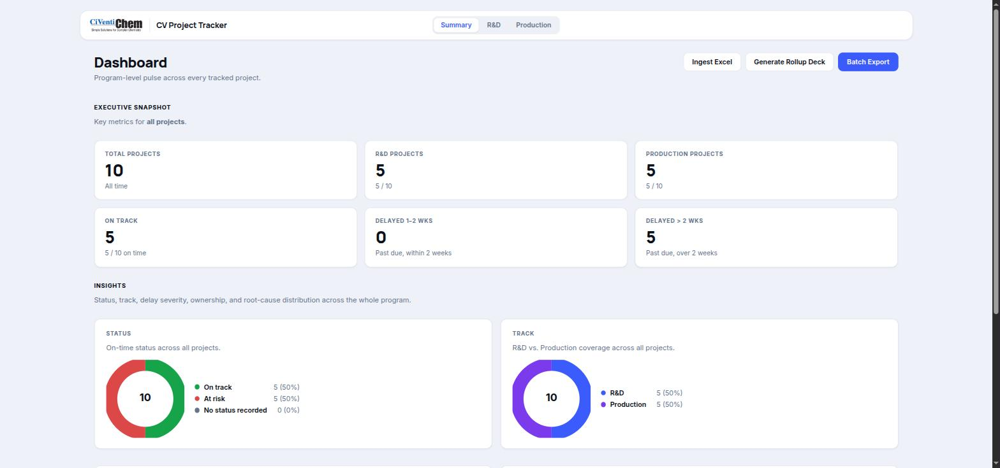
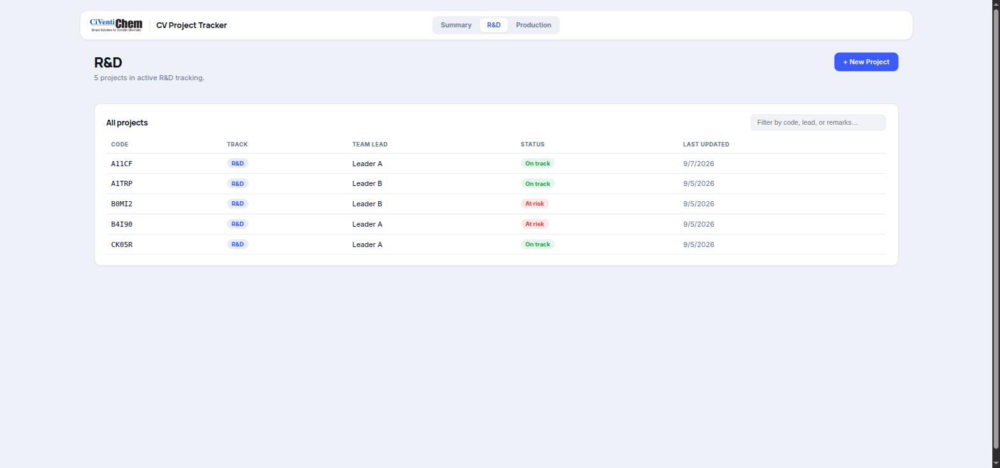
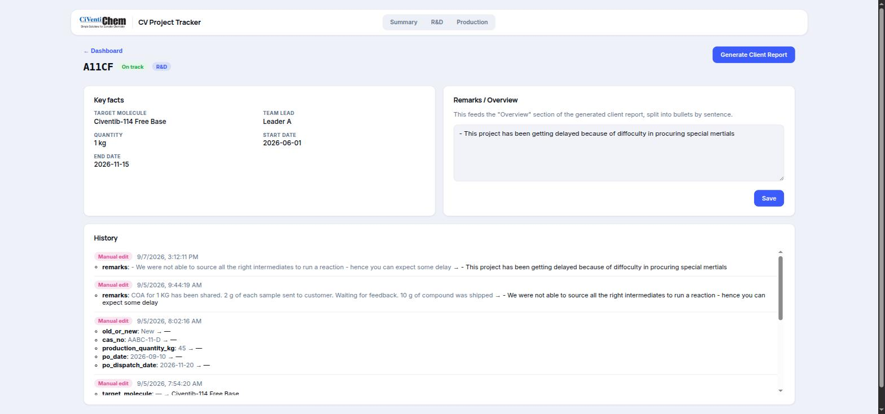

Four gated phases, NDA, local deployment, archive digitization, then a local AI layer that can answer "how did we solve this before," with nothing ever leaving CiVentiChem's own machines.
Use the bar above to jump straight to a phase, or scroll through top to bottom. Each phase closes with the gate that has to be cleared before the next one starts.
Everything (the application, the archive, and the AI models) runs on hardware CiVentiChem owns and controls. No cloud database, no third-party LLM API, no telemetry, no data egress at any point. This is the one requirement every phase below is designed around, not a checkbox added at the end.



Four gates. Clearing one unlocks the next.
Nothing gets installed, copied, or even looked at until the paperwork makes the local-only promise contractual, not just verbal.
Sensitive process and formulation data would be exposed the moment work starts, with no shared, written definition of what "done" means or where the data is allowed to go.
Sign a mutual NDA and a written zero-egress data-handling addendum first, plus a one-page scope note both sides agree to, before any device or file is touched.
Legal turnaround time on either side, and getting the paperwork in front of someone with actual signing authority.
NDA countersigned and the scope note approved by name on both sides.
Before installing anything, understand what CiVentiChem actually has to run it on, then put the tracker on it, and make sure their own people can drive it without you in the room.
Nobody has confirmed what machine, network, or IT policy the tracker would actually run under, so a generic install risks the wrong hardware, a blocked port, or a team left unable to use it alone.
Audit the hardware and network first, deploy the tracker as a local, auto-starting service sized to what's actually there, configure real backups, then train two or more staff to run it unassisted.
Delayed IT/admin access approval, and machines too old or underpowered to be worth deploying to, which would mean a hardware purchase before this phase can close.
App runs independently on client hardware, with no dependency on your laptop, and at least two staff can operate it unassisted. A test restore from backup succeeds.
Find out what CiVentiChem's history actually consists of, get it into a shape a machine can use, and size, in concrete numbers, the storage and compute that Phase 3 will need.
Years of history live scattered across old Excel sheets, scanned notebooks, and PDFs, in inconsistent formats. Without knowing the real volume, any storage or AI hardware number is a guess.
Catalog every source, clean and structure a validated pilot batch with the SMEs, then size storage and compute from the measured volume, not an assumed one.
Missing or damaged historical records, poor OCR quality on old handwriting, and SME time needed to validate the pilot before the full pass runs.
| Layer | Estimate basis | Notes |
|---|---|---|
| Raw archive | measured directly in 2A | Typical CRO paper/scan archive of this size runs low tens of GB once scanned notebooks and COAs are included; confirmed, not assumed, during cataloging. |
| Structured / cleaned copy | ~1.0-1.3× raw | Normalized text, OCR output, and metadata tags alongside the originals (originals are never deleted). |
| Vector index (Phase 3) | ~0.2-0.4× raw text volume | Embeddings for search, small relative to the documents themselves. |
| Backup / versioning margin | 2× the above, minimum | One local, one offline/cold copy, still zero cloud, per the standing constraint. |
| Recommended tier | 2-4 TB NAS, RAID-1+ | Comfortable 3-5 year growth buffer at this archive's likely scale; revisit after the Phase 2A catalog confirms actual volume. |
| AI compute, light tier | 32-64 GB RAM, CPU-only | Sufficient for a handful of users, a quantized 7-8B model, and <50k archived documents. |
| AI compute, standard tier | 1× 16-24 GB VRAM GPU | Needed once several people query concurrently, or a larger (13B-class) model is wanted for richer synthesis. |
SMEs sign off on the structured pilot dataset's accuracy, and CiVentiChem has decided on (and, ideally, procured) the storage/compute tier.
Turn the structured archive into something the team can ask questions of, in plain language, entirely offline, with every answer traceable back to a real document.
A general-purpose chatbot can confidently make up an answer about a project that never happened. On a chemistry archive, a wrong "how we solved this before" is worse than no answer.
Build a citation-only local assistant (local embeddings, local vector store, local LLM) that answers strictly from the archive and says "not found" instead of guessing, validated against a blind SME-reviewed test set.
Local compute limits capping model quality (this is why the Phase 2 hardware decision matters), and multiple validation rounds likely needed before SMEs trust the answers.
SMEs confirm the assistant's answers are accurate and correctly cited on the blind test set, running fully offline on CiVentiChem's own hardware.
Every component chosen for this roadmap has an on-prem-capable option with no mandatory cloud dependency: